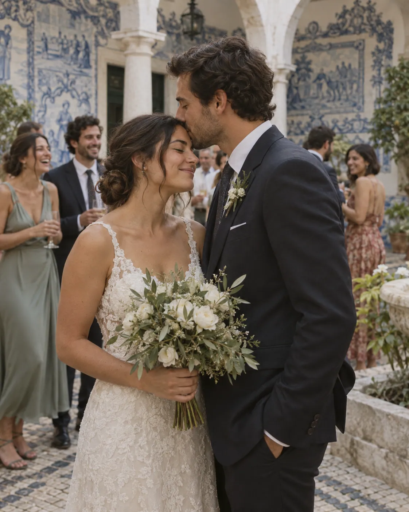
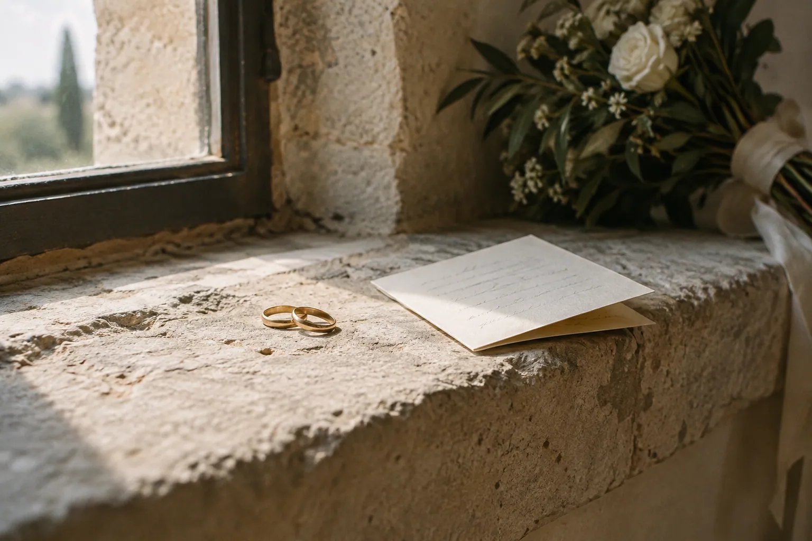
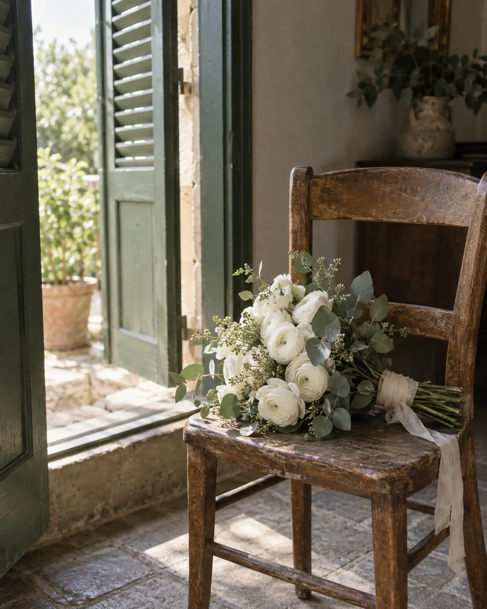

Marta & Tomás
- Where
- Quinta da Regaleira, Sintra
- When
- June, 142 guests
- Covered
- 7:40 a.m. to 1:10 a.m.
- Delivered
- 683 photographs, day 19
One long table under the trees, a courtyard of blue tiles, and a best man who read his speech from his phone and cried before the second line.

